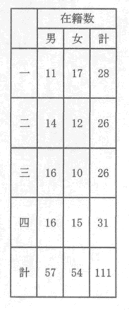

四十年も前の事である。母に死なれた子供達はその父に連れられて凾館から祖父が住む信州に、倅に後添が出来た、孫共は祖父に連れられて再び凾館の倅へといつた次第で、そのをりの私の祖父の手帖に綴ぢた道中記には、
――▲――
私は最近坪田譲治から宮澤賢治といふ名を始めて聞いた。書店は私に宮澤賢治全集、宮澤賢治名作選、注文の多い料理店等の本を呉れた。また賢治の絵といふものが、東京から盛岡にかけて幾点かある事も聞かされた。
しかしながら自分のやうな者は、本来安井曾太郎と中川一政の二人を偉いと思つてゐればよいので、正直なところ宮澤賢治の故郷花巻のはづれや、盛岡から二つさきの滝沢の放牧場で、向ふの山の麓、あれが啄木の出たところですと人々に指さし教へられても、これはなかなか戦国時代だなあと腹の中に呟きこんでゐたのである。
私はただ、「風の又三郎」の作者を生んだ土地を見、かたがたその又三郎を入れるのに適当な学校を探すため、遥々奥州へも下つてみたのである。
――▲――
斯う書けば、宮澤賢治の敬愛すべき父母、またよきその弟、また
――▲――
私が又三郎を入れる学校は、彼宮澤賢治がその作物を盗みぬかれてゐたその一つ一つの跡へ、薄の穂を一本づゝ
 しておいたといふ畑の横を流れてゐる北上川の渡を渡つて行つた島分教場であつた。
しておいたといふ畑の横を流れてゐる北上川の渡を渡つて行つた島分教場であつた。島文教場は児童の在籍数
といふ学校である。
読者はこの学校の所在地を貧弱なものとして考へるかも知れない。私も見ないうちはさう考へてゐた。見ればその部落は甚だ綺麗で、作物も立派であり、家々は少くとも私の家よりは堂々としてをり、そこで豊かに落ついた静かな暮しが想はれるのである。
それに戸毎の戸袋には意匠がほどこしてあるのである。一軒の家に殊に立派なものがあつた。私は一寸見た時始め仏壇が戸外に安置されてゐるのかと思つた。漆喰でかためたものであつた。私の興味は花巻に残つてゐる足軽同心の家よりもあの部落の戸袋に残つてゐる。
盛岡といふ所も甚だ愉快に思へた。私を愉快にしたのは何も賢治の会の方方ではないのである。私は公園で、オホコノハヅクと梟を楽んで見た。盛岡の高橋さんは私に教師の手帖といふ随筆集を呉れた。高橋さんの随筆集を読めば、梟は善い鳥ではないらしい。しかし、小桶の中に入つては水を浴び、まづ鉄砲玉のやうな目をきよとんとさせては、ぶるぶると羽根をふるはせてゐる梟の顔をみてゐれば、飽きもせぬたのしさに時をすごすものである。
盛岡は明るいユウモワがある土地である。案内役を買つて呉れた高橋さんの兄さんの小泉さんの家に一夜の宿を借りたのであるが、翌朝の私は鳶の声で目が醒めた。寝床に起きなほつて枕の被ひの手拭に目を落すと鷹匠町精衛舎といふ文字が染出されてゐたのである。鳶に鷹がこれほどぴつたりこやうとは思ひもつかなかつた。
――▲――
馬賊髭を生やしよく乾燥した、つまり筋肉が引きしまつて精悍な小泉さんは、滝沢の種畜場に電話をかけて馬車の交渉をして、私を滝沢の放牧地へ連れて行つて呉れたのであるが、南部の鼻まがりに対し何とかのまがり家といつて、居ながらに馬ツ子に注意ができるやうになつてゐる民家を見ながら、相当の距離を走つてゐた時であつた。私達男ばかりがざつと十人も乗り込んでゐる馬車をたつた一人の男が止めたのである。
私は何かと思つた。誰れかが馬車を止めた。相当の年配をした堂々たる体躯の其男に銭を渡した。するとその男が馬車を離れて、馭者が馬に鞭を加へた。
馬車の後ろに席をとつてゐた私には、その男が何者であるかを了解できなかつたのであるが、馬車とその男の間にへだたりができて始めて、股引もなく半纏だけで膝を叩いて笑つてこちらを見送つてゐる、その膝のところに偉大なる物が笑つてゐるのを認めて一切を了解した。私は馬を見にきて馬を見ずに馬のやうな奴を見たと言つた。するとそれ迄は一言も言はなかつた皆が急に陽気に笑つた。ことによると、人々が東北健児の物のサンプルと思はれては困ると心配してゐたのかもしれない。
――▲――
私は私達のその日の愉快なピクニツクで、始めて馬も喰はぬといふ鈴蘭に赤い綺麗な実があるのもみた。馬車の馬も車を離れて飛び廻つての帰途、夫人子供を連れた知事が、朝滝沢の駅から種畜場迄私達を運んだ馬車に乗つて後から駆けてきた。知事に先に路を譲つた私達に知事は目礼して行つたが、私達は知事もやはり偉大なる魔羅に喜捨をとられたであらうと笑ひながら心配してゐた。
以前の場所に以前の男が矢張りゐた。既に喜捨をした一行とみて今度は近よりかけてやめてしまつた。実話雑誌の社長といふものは私達と違つて何でも知つてゐるらしいが、私達が、知事は夫人子供の手前二十銭もとられたらうと騒いだといふ話をしたら、一度見たい、盛岡までは自分はよく行くからと言つてゐた。謹厳な坪田譲治でさへもが、井上友一郎を励ます会に出席してこの滝沢の傑物の話を伝へ人々を喜ばせたさうである。
男子は須からく男根隆々たるべきか。（了）
〔『都新聞』昭和一四年一二月一五・一七日〕